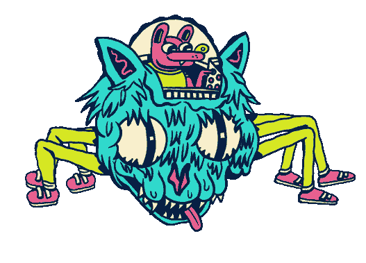

Lab 14: Loops
Challenge
The goal of this lab was to learn basic debugging that will help with our syntax errors..
Problems
No, problems just a bug killer and solver. I didn’t have syntax errors because I would heavily check the console when doing labs and making sure they worked before submitting. Overall this lab was really simple and easy to go through with looking at the lecture notes.
Results
These are the labs I redid:
Lab 8